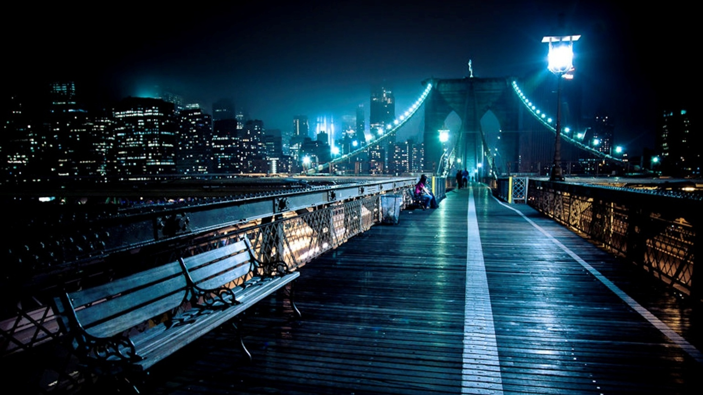

-
What do we do?
Starsky Studios comprises of a large number of highly talented and creative individuals who offer services ranging anywhere from photography to character design. We aim to offer high quality work that stands out, for that is what our name symbolizes. Each piece of work is meant to stand out, like the stars in the night sky. Our company slogan is "Shine bright like the stars in the night". Founded in 2019, we have been producing high quality work and have successfully served over 100 satisfied clients.

City Lights
A stunning shot taken by one of our best photographers, this piece features extensive knowledge of what makes an image look great. The creative usage of the white lines on the bridge as leading lines guide the eye along the image towards the bright lights. The rule of thirds is also carefully applied here, with the brightest lights in the top right corner of the image. The beautiful contrast between the bright lights and dark night sky also improves the quality of the image by leaps and bounds.

Sunrise City

A beautifully illustrated piece of art by one of our professional artists. This illustration captures the beauty of a city and combines it with the pleasing colors of a sunrise. Not only is it aesthetically pleasing to look at, it also manages to draw attention to its subjects. The two characters in the image, despite being silhouettes, manage to capture our attention thanks to the contrast between the colors and the angular leading lines sprouting from them.
Copyright 2019 Starsky Studios. All rights reserved
Terms of Service | Privacy Policy